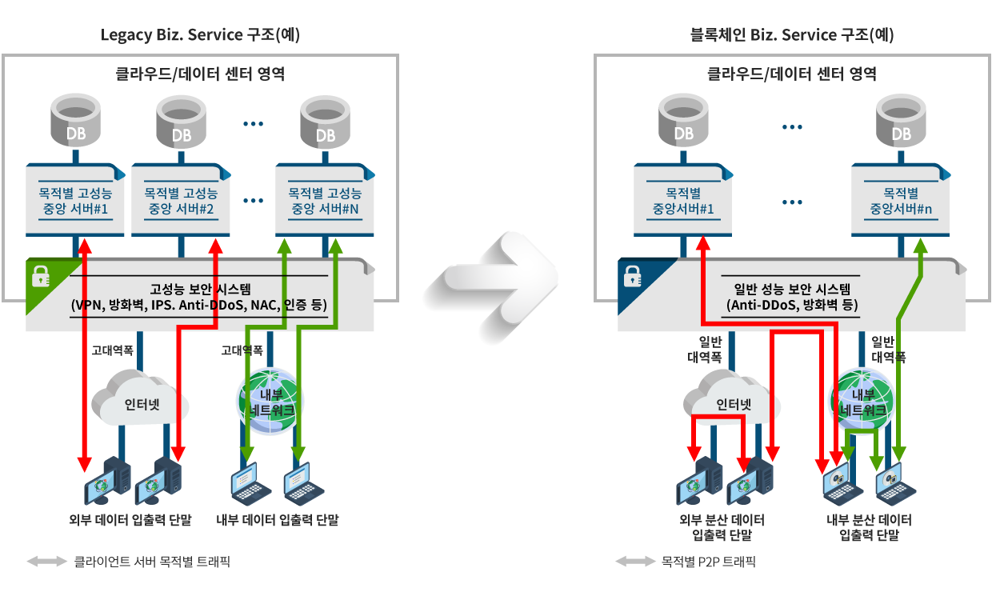
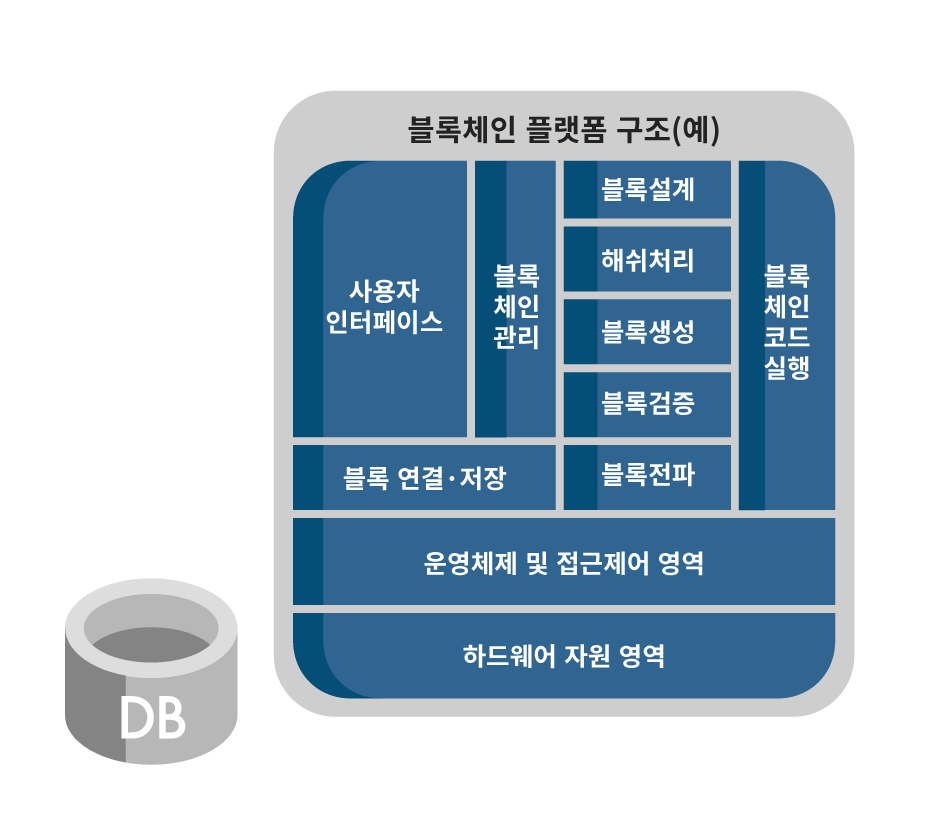
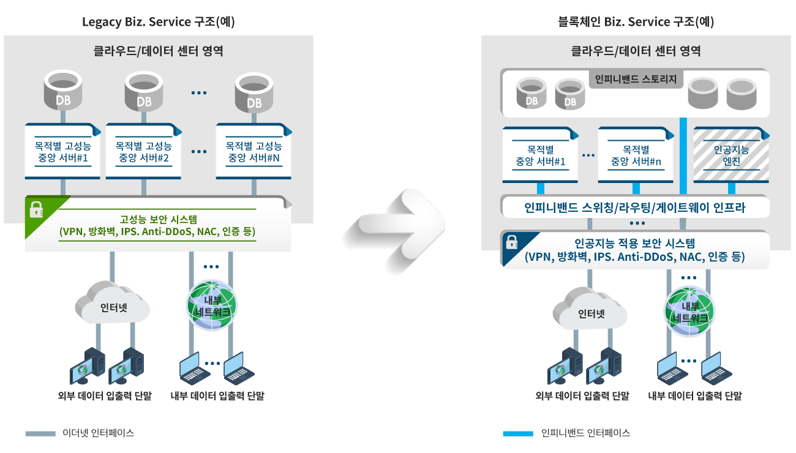

- - 교환 전송기술이 초대용량 WDM으로 전이되고 있는 추세에 맞추어 PETA-BIT 라우터와 WDM의 조합을 통한 고속의 핵심망 구축사업을 전개
- - ACCESS단의 솔루션이 다양화되고, 저가의 고속 ACCESS 서비스 제공을 위한 신기술이 등장함에 따라 다양한 형태의 솔루션을 제공
홈 < 사업소개 < Solution Portfolio
Solution Portfolio

인터넷 핵심망/접속망
Internet Core Network Access Network Solution
서비스를 위한 서비스사업자의 인터넷 INFRA 구축과 INFRA를 기반으로 사용자 접속을 위한 기본 ACCESS망 구축에 관한 제반 솔루션 사업
시장 환경 및 요구
주요서비스 및 기능
- - 인터넷 접속을 위한 필수 통신 Infra Solution
- - 효과적인 DATA Traffic 전송, 서로 다른 프로토콜을 관리, 통신망에서 정보를 전송하기 위해 최적의 경로를 설정하고 관리
- - LAN 및 WAN 환경에서 대규모 사용자 Network을 효과적으로 연결

적용고객
- - 대형/중소형 ISP (KT, LG데이콤, SK Telecom, 세종 Telecom 등)
- - Enterprise Network (KT&G, 제주항공, 나눔 로또, 연세 중앙교회 등)
- - 공공, 금융, Portal Network (NHN, 도로공사, 토지공사, 원광대 등)
적용 솔루션
- - 대용량의 트래픽 수용을 위하여 고집적 고성능의 데이터 핵심장비를 이용한 망 진화 사업
- - PETA-Bit 라우터 / 스위치를 이용한 차세대 네트웍 구축
- - ATM, IP, XDSL, PSDN, Metro Ethernet과 같은 다양한 인터넷 접속 환경에 맞는 ISP, 기업체의 인터넷 접속망 구충 및 설계
핵심망 / 접속망 고도화 사업

- - 광 케이블 기반의 전송망 재구축 사업
- - DWDM솔루션 및 방송 전송 솔루션
- - IP + 전송 솔루션(Optical 스위치)
광전송 고도화 사업

인터넷 INFRA부가 서비스
Internet Infra Value Added Service
인터넷 INFRA 부가 서비스 사업은 INFRA를 기반으로 최종 사용자에게 기존 접속망에 특화된 SOLUTION을 가미함으로써 새로운 형태의 접속망을 구축하고 서비스를 제공하는 사업
주요서비스 및 기능
- - 기존 ACCESS망(ISDN, PSTN,xDSL)에 대한 결점을 보완하기 위한 새로운 기능의 SOLUTION 제공
- - 인프라 구축을 완료한 기업체를 중심으로 보안 및 QoS에 대한 요구가 증가하고 있으며, 이러한 요구에 따라 보안 및 QoS가 가미된 새로운 ACCESS망을 구현

적용솔루션
- CDN (Contents Delevery Network) 구축
- 대형 ISP에서 제공되는 전국망을 기반으로 IDC센터를 지역별로 분산시켜 구성, LOAD-BALANCING 및 BACKUP SOLUTION을 제공 - IDC센터의 활성화
- VPN (Virtual Private Network) 구축
- 기업내 NETWORK을 인터넷을 이용하여 구축하고, DATA 암호화 및 QoS 제공SOLUTION을 통하여 기업보안을 강화시킨 서비스
적용고객
- - 대형/중소형 ISP (KT, LG데이콤, SK Telecom, 세종 Telecom 등)
- - Enterprise Network (KT&G, 제주항공, 나눔 로또, 연세 중앙교회 등)
- - 공공, 금융, Portal Network (NHN, 도로공사, 토지공사, 원광대 등)

무선 인터넷 서비스
Mobile Internet Service
무선 기술을 이용하여 이동 사용자 (Mobile, Laptop)에게 인터넷 서비스를 제공하는 사업
주요서비스 및 기능
- - LTE, WCDMA, HSDPA (인터넷 휴대폰)망 접속을 위한 제반 솔루션 제공
- - 5G 망 접속을 위한 제반 솔루션 제공
- - 무선 IP Network 구축 솔루션 제공

적용솔루션
- Wireless Network 구축
- 기업망 내의 Local Area Network을 무선랜 환경으로 전환하여 이동성 및 업무 접근성 향상을 도모하는 Solution
- 차세대 무선 Infra 구축
- 5G, 5G Ultra-Dense Network과 같은 차세대 무선 Infra구축을 위하여 최적화된 솔루션을 제공
적용고객
- - 대형/중소형 ISP (KT, LG데이콤, SK Telecom 등)
- - Enterprise Network
- - 공공, 금융, Portal Network

대용량 Data 관리 솔루션
Storage Solution
ISP / NSP / Portal 사업자 및 IT전 부문에서 데이터 사용량의 증가 추세에 따라, 대규모 저장장치(Storage)를 도입하고 관리방안을 제시하는 솔루션
주요서비스 및 기능
- Storage Solution
- 다양한 환경에 맞는 data 저장 시스템
- 1TB~500PB의 하이엔드급의 확장성
- 캐시 파티션 기능 탑재
- 다양한 종류의 RAID Level지원
- True Copy, Shadow-Image등 High-end급의 다양한 솔루션적용
- SAN Switch Solution
- 서버 및 스토리지 장치를 Fiber Channel로 연결
- 고도의 확장성을 지닌 core-to-edge 스토리지 네트워킹 인프라 구축
- 8포트에서 이중 192포트까지 구성

적용솔루션
- - SERVER FARM Solution
- - 데이터 백업센터 (Disaster Recovery) Solution
- - 대용량 백업장치 Solution
적용고객
- - 삼성전자, 옥션, 현대자동차
- - KTF, KT

인터넷 Application
Internet Application
기존 인터넷 인프라를 활용하여 WEB-Cache, WEBrkthr, 화상 시스템과 같은 기존 기술 및 신기술 Application을 활용한 솔루션
주요서비스 및 기능
- - Web 가속, WAN 가속, Cache
- - Application 압축
- - Web Mail, 대용량 massasing
- - 화상 Meeting system
- - L7 Layer (Application) Control
적용고객
- - SK Telecom, KT, SK Infosec
- - 연세 대학교, 나눔 로또
- - 현대 시멘트, KT&G

인터넷 통합 보안 서비스
Integrated Security Service for Internet
기업 및 서비스사업자에게 서비스 및 시스템 보안에 관련된 Total솔루션 제공 서비스
주요서비스 및 기능
- - 허용되지 않은 외부의 접근 차단 시스템
- - Firewall
- - Anti-Virus
- - DDoS Attack 차단
- - VPN, SSL-VPN, Lan-to-Lan VPN
- - Web Firewall
- - 비정상 트래픽 감시 및 차단
- - PKI Solution

적용솔루션
- Network 공격차단 Solution
- Network 단에서 발생될 수 있는 Virus, DDos 공격, Broadcast Storm, Abnormal Traffic과 같은 악의적인 공격을 차단하고 감시하는 솔루션
- Application침입차단 Solution
- 금융, 증권,공공기관,기업체의 Application에 악의적으로 접근하는 Hacker 침입을 차단하는 솔루션
적용고객
- - SK Telecom, KT, SK Infosec
- - 연세 대학교, 나눔 로또
- - 현대 시멘트, KT&G

음성/데이터 통합 서비스
Voice Data Integration Service
음성/데이터 통합 서비스 사업은 Internet 망을 이용한 음성서비스와 일반 음성망과의 결합에 관련된 서비스이며 점차 그 사업영역을 넓혀 Voice over Broadband로 통합되는 사업군
시장환경
- - 망 운영의 비효율성 및 경제성에 대한 요구가 점점 늘어가는 가운데 교환망, 엑세스망, 데이터망, 초고속광통신망에 대한 통합요구 증가
- - 궁극적으로 IP over any network (IP 전화/ 데이터망)으로 통합될 것으로 예상
주요서비스 및 기능
- - 음성을 IP프레임화하여 인터넷망을 이용하여 음성전달
- - 음성과 데이터라는 서로 다른 망간 인터페이스를 통합시켜 IP 기반의 통합인프라를 구축
- - 기존 PSTN망(전화망)에서 할 수 있는 것들은 모두 패킷(데이터망)으로 이전 VoIP, IP PBX, Softswitch, IP-Phone
적용고객
- - 대형/ 중소형 ISP (KT BcN, Premium Network)
- - Enterprise Network
- - 공공, 금융, Portal Network

트래픽관리/제어 서비스
Traffic Management System
인터넷 자원(통신장비, 회선, 트래픽 양)을 효과적이고 경제적으로 운용하기 위하여 트래픽을 인위적으로 제어하고 관리하는 솔루션
주요서비스 및 기능
- - 인터넷 파일 공유 서비스 제어 / 차단 (P2P)
- - 비업무용 사이트 (서비스) 제어/ 차단
- - 메신저, 웹하드 차단, 중요 자료 유출 방지
- - 해외 불법 정보 사이트 차단
- - 네트워크 모니터링 및 분석 서비스

적용고객
- - KT, HT, SK 네트웍스, 드림라인, 세종텔레콤
- - 각 지방 교육청 (대구, 부산, 전남 등)
- - 삼성전자, LG전자기술원, GS홈쇼핑
국내외 사업자 망 컨설팅 서비스
Consulting Service
고객사 네트워크 시스템에 대해 정형화된 컨설팅 방법론에 의거하여 구성 자원 및 업무 흐름에 관한 모든 형황을 정확하게 분석함으로써 궁극적으로 고객사의 현재와 미래에 관현된 모든 사업환경에 최적화된 구현방안을 제시

블록체인 서비스
BlockChain SDN AI Service
중앙통제관리형 업무·서비스 프로세스 또는 데이터 수집·관리 환경 등에서 개별 업무 및 데이터 속성에 대한 상세한 분석을 통해 각각의 보안 유지 중요도와 위·변조 영향 특성을 구분하여 효율적·효과적 운영이 용이하도록 탈중앙화(Decentralized)된 데이터 저장·처리 및 관리환경 구축
주요서비스 및 기능
- - 탈중앙화 시스템(플랫폼) 구축
- - 업무서비스 및 데이터 분석 컨설팅
- - ICO(Initial Coin Offering) 설계 및 구축
- - 공공, 금융, 인증, 플랫폼, 기업 서비스 블록체인 적용
대상고객
- - 데이터 개방에 따른 업무 효율성 제고를 추구하는 공공부문
- - 거래 원장 기록의 안전한 유지·관리를 통한 서비스 강화 추구 금융 기업
- - 데이터 분산 저장 관리에 의한 서비스 운영 효율성 제고 기관 또는 기업
블록체인 서비스 구조(예)

블록체인 플랫폼 구조(예)

소프트웨어정의네트워크
Software Defined Network, SDN
클라우드 환경의 일반화에 따른 서버 가상화 영역에서 운용중인 가상 서버를 대상으로 기존의 L2/L3스위치 교체 없이 소프트웨어적인 네트워크를 구현하는 Overlay SDN방식과 네트워크 장비 제조사의 전용 OS가 탑재되지 않은 일명 화이트박스 L2/L3스위치 또는 데이터 송수신과 송수신 제어를 소프트웨어적으로 분리하여 송수신과 제어 상호간 통신을 담당하는 오픈플로우 프로토콜을 지원하는 하드웨어 L2/L3스위치에 소프트웨어적인 변형이 용이한 운영체제를 선택적으로 설치하여 네트워크를 구현하는 hop-by-hop SDN 방식으로 SDN을 구축
주요서비스 및 기능
- - 경제성 및 운영 효율성을 적용한 통신 본연의 핵심 기능과 컨트롤러의 분리 운영
- - 지역·위치적으로 분산된 통신 장비들에 대한 중앙 통제관리 강화
- - 다수의 가상머신(VM)에 분산된 어플리케이션간 통신 유동성 즉각 대응
- - 데이터센터 구성 요소인 서버, 스토리지, 네트워크에 대한 자동화된 오케스트레이션
- - 사전에 정의된 스크립트 기반의 라이브러리 프로파일(템플릿) 적용
대상고객
- - 가변적 구조/대역폭 변경을 필요로 하는 통신망 운영 사업자
- - 글로벌 또는 지역적으로 분포된 서비스 인프라(클라우드) 운영 사업자
- - 다양하고 빈번한 서비스 출시와 종료를 반복하는 서비스 사업자
- - 인프라 구조에 대한 가변적 정책 적용을 필요로 하는 일반 기업 및 학교
Juniper Networks SDN 구성(예)

인공지능
Artificial Intelligence, A.I.
서비스 및 인프라 노드들로부터 수집한 다양하고 복잡한 정형 및 비정형 데이터를 근간으로 구축한 빅데이터 환경과 이러한 환경에서 추출한 정보 데이터로부터 시간, 기후, 인구, 트래픽 변화 등에 따른 비지도 학습, 통계, 확률적 정보 데이터 분석 및 추론 알고리즘 등을 적용하여 전문가의 숙련된 기술력에 의존했던 데이터 분석, 판단, 실행 작업의 일부를 인공지능이라는 첨단 기술을 적용시켜 의미있는 정보 추출을 통해 이상현상에 대한 자동화된 대응과 고 부가가치 정보에 대한 가공을 용이하게 함
주요서비스 및 기능
- - 데이터 자동 수집 엔진, 문서 분류 알고리즘, 검색 클러스터링
- - 인피니밴드 기술 기반의 빅데이터 처리 인프라
- - 원격 직접 메모리 접근(RDMA)을 통한 중앙처리장치 부하경감(Off-Load)
- - 확률적으로 특이한 보안 위협 자동 감지 및 알림
- - 분산서비스거부공격(DDoS) 자동 대응
대상고객
- - 방대한 기저 데이터 발생 및 단순 저장 기업 또는 기관
- - 정의된 정책 기반의 단순 정보보호 대응 인프라 구성 기업 또는 기관
- - 방대한 기저 데이터로부터 부가가치를 창출하고자 하는 기업 또는 기관
- - 시스템 부하를 최소화한 효율적 데이터 수집 및 운영 환경 구축 기업 또는 기관
인공지능 서비스 구조(예)
